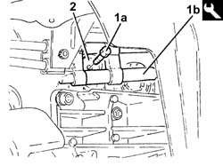
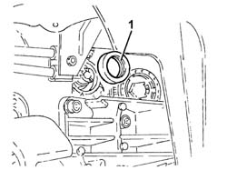
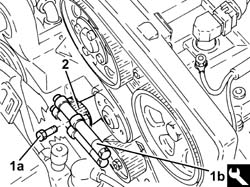
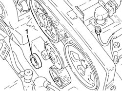
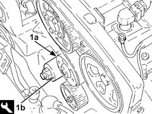
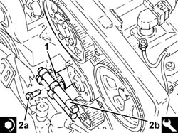
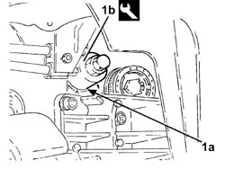
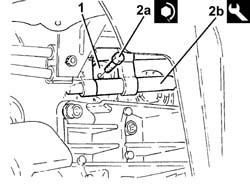

1020E20 FRONT OIL SEAL OF ONE COUNTER-ROTATING SHAFT, L OR R - R + R
- Path
- Procedures > 10 ENGINE UNIT > 1020 CRANKCASE SUMP AND COVERS > 1020E OIL SEALS ON COUNTER-ROTATING SHAFTS > 1020E20 FRONT OIL SEAL OF ONE COUNTER-ROTATING SHAFT, L OR R - R + R
- Kind
- repair procedure (removal / refitting; the operation number is the code)
- Applies to
- engines: 2.0 JTS; all production periods
- Interactive page
- https://sloeber94.github.io/elrnDB-aGt/en/#/125000936
Applies to: engines: 2.0 JTS; all production periods
 Removing
Removing
 Refitting
RefittingPosition the vehicle on the ramp.
Ensure that the ignition key is in the OFF position, then disconnect the negative battery terminal (-).
Name | Connector | |
|---|---|---|
- | Battery | See A1B BATTERY ( BATTERY NEGATIVE ) |
Proceed with removal
Op. 4450B04 RIGHT FRONT WHEEL R R.
Proceed with removal
Op. 7055B54 UNDER-ENGINE GUARD - R R.
Proceed with removal
Op. 1016A40 IGNITION COIL COVER ON CYLINDER HEAD- R+R.
Proceed with removal
Op. 1092E10 COUNTER-ROTATING SHAFT DRIVE TOOTHED BELT - R + R.
PROCEED AS FOLLOWS FOR THE LEFT COUNTER-BALANCE SHAFT COVER.
1. Undo the bolt (1a) for the left counter-balance shaft pulley using the tool (1b) for counter-torque.
 | Name | Country |
|---|---|---|
1b | Counter-torque | 1.820.286.000 |
2. Remove the left counter-balance shaft pulley.

Applies to: engines: 2.0 JTS; all production periods
1. Release and remove the left counter-balance shaft front oil seal.

Applies to: engines: 2.0 JTS; all production periods
PROCEED AS FOLLOWS FOR THE RIGHT COUNTER-BALANCE SHAFT COVER.
1. Undo the bolt (1a) for the right counter-balance shaft pulley using the tool (1b) for counter-torque.
| Name | Country |
|---|---|---|
1b | Counter-torque | 1.820.286.000 |
2. Remove the right counter-balance shaft pulley.

Applies to: engines: 2.0 JTS; all production periods
1. Release and remove the right counter-balance shaft front oil seal.

Applies to: engines: 2.0 JTS; all production periods
Refitting
RemovingPROCEED AS FOLLOWS FOR THE RIGHT COUNTER-BALANCE SHAFT COVER.
1. Fit a new right counter-balance shaft front oil seal (1a) in the housing using the tool (1b).
| Name | Country |
|---|---|---|
1b | Fitting tool | 1.821.251.000 |

Applies to: engines: 2.0 JTS; all production periods
1. Place the right counter-balance shaft pulley back in its housing.
2. Tighten the bolt (2a) for the right counter-balance shaft pulley to the recommended torque using the tool (2b) for counter-torque.
 | Fastening | Component | Ø | Value (daNm) |
|---|---|---|---|---|
2a | Bolt | COUNTER-ROTATING SHAFT PULLEY | M10 | (Counter balance shaft side) 4.5 ÷ 5.5 |
| Name | Country |
|---|---|---|
2b | Counter-torque | 1.820.286.000 |

Applies to: engines: 2.0 JTS; all production periods
PROCEED AS FOLLOWS FOR THE LEFT COUNTER-BALANCE SHAFT COVER.
1. Fit a new oil seal (1a) in the housing on the left counter-balance shaft cover using the tool (1b).
| Name | Country |
|---|---|---|
1b | Fitting tool | 1.821.251.000 |

Applies to: engines: 2.0 JTS; all production periods
1. Place the left counter-balance shaft pulley back in its housing.
2. Tighten the bolt (2a) for the left counter-balance shaft pulley to the recommended torque using the tool (2b) for counter-torque.
| Fastening | Component | Ø | Value (daNm) |
|---|---|---|---|---|
2a | Bolt | COUNTER-ROTATING SHAFT PULLEY | M10 | (Counter balance shaft side) 4.5 ÷ 5.5 |
| Name | Country |
|---|---|---|
2b | Counter-torque | 1.820.286.000 |

Applies to: engines: 2.0 JTS; all production periods
PROCEED AS DESCRIBED BELOW FOR BOTH COUNTER-BALANCE SHAFT COVERS.
Proceed with refitting
Op. 1092E10 COUNTER-ROTATING SHAFT DRIVE TOOTHED BELT - R + R.
Proceed with refitting
Op. 1016A40 IGNITION COIL COVER ON CYLINDER HEAD- R+R.
Proceed with refitting
Op. 7055B54 UNDER-ENGINE GUARD - R R.
Proceed with refitting
Op. 4450B04 RIGHT FRONT WHEEL R R.
Connect the negative (-) battery terminal.
Remove the car from the ramps.